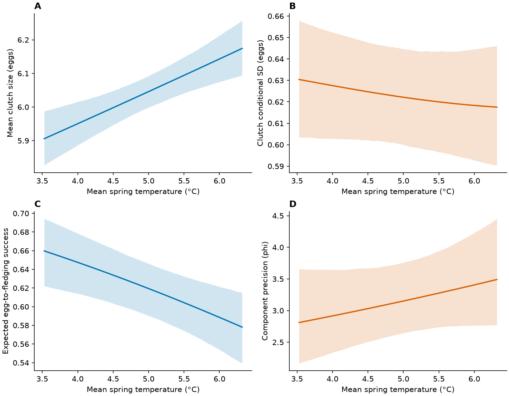

S3. Clutch-size models
Temperature associations with reproductive investment
Data preparation
The analysis uses 12,627 clutch records from 8,894 females. Model-ready records are public. Run the standalone reproduction pipeline to generate fitted objects locally.
Show R code
out <- "models/within_between_20261026"
d <- read.csv("data_derived/analysis/clutch_model_data.csv")
m <- readRDS(file.path(out, "clutch_baseline_selected.rds")) # after the public runnerSample check. Clutch size: 12,627 attempts, 8,894 females, 44 seasons. Egg-to-fledging success: 9,790 attempts, 7,132 females, 39 seasons. Public model-ready CSVs are available in data_derived/analysis; these counts are the saved analysis-sample metadata.
| trait | records | females | seasons | females_varied_temperature |
|---|---|---|---|---|
| clutch | 12627 | 8894 | 44 | 2547 |
| fledging | 9790 | 7132 | 39 | 1908 |
Fit and verify the single-temperature model
COM-Poisson location and dispersion use laying date, temperature, year and age. Female and year random intercepts enter location.
Historical verification code (provenance)
R/75_verify_COM_Poisson.R
.libPaths(c(path.expand('~/R/cf_model_comparison_20261013_R46'),path.expand('~/R/x86_64-pc-linux-gnu-library/4.5'),.libPaths()))
library(glmmTMB)
out<-'glmmTMB_comparison_20261016/clutch_counts';d<-readRDS(file.path(out,'data.rds'))
m<-readRDS(file.path(out,'COM_predictors_bounded.rds'));pl<-m$obj$env$parList(par=m$fit$parfull);st<-pl[c('beta','betadisp','theta','b')]
lo<-c(1.6,-.03,-.08,-.008,-.15,-5,rep(-.5,4),rep(-10,2));hi<-c(2,.01,.08,.008,.15,0,rep(.5,4),rep(0,2));sc<-c(1,100,10,200,10,1,100,10,200,10,1,1)
a<-glmmTMB(clutch~rel_LD+temp_mean_c+year_c+age_class+(1|female_id)+(1|year_f),dispformula=~rel_LD+temp_mean_c+year_c+age_class,family=compois(),data=d,start=st,control=glmmTMBControl(optimizer=optim,optArgs=list(method='L-BFGS-B',lower=lo,upper=hi),optCtrl=list(maxit=1000,factr=1e4,parscale=1/sc),parallel=1))
saveRDS(a,file.path(out,'COM_predictors_verified.rds'))
dd<-do.call(rbind,lapply(list(nlminb=m,LBFGS=a),function(x)data.frame(code=x$fit$convergence,pdHess=x$sdr$pdHess,logLik=as.numeric(logLik(x)),scaled_gradient=max(abs(x$sdr$gradient.fixed*sqrt(diag(x$sdr$cov.fixed)))),bound_distance=min(pmin(x$fit$par-lo,hi-x$fit$par)/(hi-lo)))))
print(dd);write.csv(dd,file.path(out,'COM_final_diagnostics.csv'))
stopifnot(all(dd$code==0),all(dd$pdHess),all(dd$bound_distance>.01),all(dd$scaled_gradient<.002),abs(diff(dd$logLik))<.01)
file.copy(file.path(out,'COM_selected.rds'),file.path(out,'COM_year_selected_for_audit.rds'),overwrite=TRUE)
saveRDS(if(logLik(a)>logLik(m))a else m,file.path(out,'COM_selected.rds'))
writeLines('Selected COM model has covariate-dependent dispersion without a year dispersion random effect; attempted full year-dispersion fit reached SD exp(-10), with negligible likelihood improvement. This is a sensitivity model, not an exactly matched random-effect structure.',file.path(out,'COM_selection.txt'))Saved model summary. Warmer springs were associated with larger clutches. The single-temperature consistency association remains uncertain. COM-Poisson dispersion is log inverse shape, not log residual SD. Coefficients below are on the link scale; these are exported estimates, not a fresh model fit. cond = location, disp = dispersion, zi = extra-zero probability.
| component | term | estimate | SE | lower | upper |
|---|---|---|---|---|---|
| cond | (Intercept) | 1.8015 | 0.00397308 | 1.79371 | 1.80929 |
| cond | rel_LD | -0.00841514 | 0.000245586 | -0.00889648 | -0.0079338 |
| cond | temp_mean_c | 0.0159318 | 0.00395571 | 0.00817875 | 0.0236848 |
| cond | year_c | 0.00090279 | 0.000330135 | 0.000255736 | 0.00154984 |
| cond | age_classOLD | 0.0299908 | 0.00237729 | 0.0253313 | 0.0346502 |
| disp | (Intercept) | -2.81497 | 0.0338217 | -2.88126 | -2.74868 |
| disp | rel_LD | 0.0527507 | 0.00292108 | 0.0470254 | 0.0584759 |
| disp | temp_mean_c | -0.0262978 | 0.0178672 | -0.0613168 | 0.00872117 |
| disp | year_c | 0.00249383 | 0.0016643 | -0.000768125 | 0.00575579 |
| disp | age_classOLD | -0.125861 | 0.0360049 | -0.196429 | -0.0552926 |
The script above is the historical verification workflow. For a clean refit from the public records without historical starting objects, use R/94_reproduce_from_public_data.R.
| row | code | pdHess | logLik | scaled_gradient | bound_distance |
|---|---|---|---|---|---|
| nlminb | 0 | TRUE | -13769 | 0.00020724 | 0.28087 |
| LBFGS | 0 | TRUE | -13769 | 0.00019347 | 0.28087 |
Export predictions from the saved fit
Show prediction-export script (run locally)
R/76_export_COM_predictions.R
.libPaths(c(path.expand('~/R/cf_model_comparison_20261013_R46'),path.expand('~/R/x86_64-pc-linux-gnu-library/4.5'),.libPaths()))
suppressPackageStartupMessages({library(glmmTMB);library(MASS)})
base<-'glmmTMB_comparison_20261016/clutch_counts'
out<-file.path(base,'primary_export');dir.create(out,showWarnings=FALSE)
m<-readRDS(file.path(base,'COM_selected.rds'));d<-m$frame
capture.output(sessionInfo(),file=file.path(out,'session_info.txt'))
set.seed(20261019)
ix<-which(names(m$fit$par)%in%c('beta','betadisp'))
bb<-MASS::mvrnorm(4000,m$fit$par[ix],m$sdr$cov.fixed[ix,ix])
summ<-function(z,est)data.frame(estimate=est,CI_low=apply(z,1,quantile,.025),CI_high=apply(z,1,quantile,.975))
cent<-read.csv('/home/arct/CF_thermal_phenology_run/data_derived/clutch_size_model_data.csv')
tc<-unique(round(cent$temp_mean-cent$temp_mean_c,10));yc<-unique(round(as.numeric(as.character(d$year_f))-d$year_c,10))
stopifnot(length(tc)==1,length(yc)==1)
for(kind in c('temperature','date','year','age')){
n<-if(kind=='age')2 else if(kind=='year')45 else 120
nd<-d[rep(1,n),];nd$rel_LD<-0;nd$temp_mean_c<-0;nd$year_c<-0
nd$age_class<-factor(rep(levels(d$age_class)[1],n),levels=levels(d$age_class))
if(kind=='temperature'){nd$temp_mean_c<-seq(quantile(d$temp_mean_c,.05),quantile(d$temp_mean_c,.95),length.out=n);xx<-nd$temp_mean_c+tc}
if(kind=='date'){nd$rel_LD<-seq(quantile(d$rel_LD,.05),quantile(d$rel_LD,.95),length.out=n);xx<-nd$rel_LD}
if(kind=='year'){xx<-1981:2025;nd$year_c<-xx-yc}
if(kind=='age'){nd$age_class<-factor(levels(d$age_class),levels=levels(d$age_class));xx<-1:2}
X<-model.matrix(~rel_LD+temp_mean_c+year_c+age_class,nd)
mu<-exp(X%*%t(bb[,1:5]));psi<-exp(X%*%t(bb[,6:10]))
sd<-matrix(sqrt(compois()$variance(as.vector(mu),as.vector(psi))),n,4000)
em<-exp(drop(X%*%fixef(m)$cond));ep<-exp(drop(X%*%fixef(m)$disp));es<-sqrt(compois()$variance(em,ep))
for(comp in c('mean','sd'))write.csv(cbind(x=xx,age_class=nd$age_class,summ(if(comp=='mean')mu else sd,if(comp=='mean')em else es)),file.path(out,paste0(kind,'_',comp,'.csv')),row.names=FALSE)
}
write.csv(data.frame(temperature_center=tc,year_center=yc),file.path(out,'centering.csv'),row.names=FALSE)
writeLines('Primary COM-Poisson curves: ML point estimates, joint asymptotic 95% CIs, exact conditional SD, zero random effects.',file.path(out,'COMPLETE.txt'))Saved prediction output (first five rows). estimate is the reference-condition expected outcome; CI_low and CI_high are pointwise 95% confidence limits. These are predictions, not model coefficients. Other predictors and random effects are held at the reference values specified in the chapter.
| x | age_class | estimate | CI_low | CI_high |
|---|---|---|---|---|
| 3.52791 | YOUNG | 5.90581 | 5.82622 | 5.98768 |
| 3.55136 | YOUNG | 5.90801 | 5.82962 | 5.98896 |
| 3.57481 | YOUNG | 5.91022 | 5.83314 | 5.99004 |
| 3.59826 | YOUNG | 5.91243 | 5.83583 | 5.99158 |
| 3.62171 | YOUNG | 5.91464 | 5.83885 | 5.993 |
Download prediction-export script
Read the clutch model and calculate its mean
Reads fitted coefficients and recalculates reference means. It does not refit the mixed model; fitting code is shown below.
Saved model summary. Warmer springs were associated with larger clutches. The single-temperature consistency association remains uncertain. COM-Poisson dispersion is log inverse shape, not log residual SD. Coefficients below are on the link scale; these are exported estimates, not a fresh model fit. cond = location, disp = dispersion, zi = extra-zero probability.
| component | term | estimate | SE | lower | upper |
|---|---|---|---|---|---|
| cond | (Intercept) | 1.8015 | 0.00397308 | 1.79371 | 1.80929 |
| cond | rel_LD | -0.00841514 | 0.000245586 | -0.00889648 | -0.0079338 |
| cond | temp_mean_c | 0.0159318 | 0.00395571 | 0.00817875 | 0.0236848 |
| cond | year_c | 0.00090279 | 0.000330135 | 0.000255736 | 0.00154984 |
| cond | age_classOLD | 0.0299908 | 0.00237729 | 0.0253313 | 0.0346502 |
| disp | (Intercept) | -2.81497 | 0.0338217 | -2.88126 | -2.74868 |
| disp | rel_LD | 0.0527507 | 0.00292108 | 0.0470254 | 0.0584759 |
| disp | temp_mean_c | -0.0262978 | 0.0178672 | -0.0613168 | 0.00872117 |
| disp | year_c | 0.00249383 | 0.0016643 | -0.000768125 | 0.00575579 |
| disp | age_classOLD | -0.125861 | 0.0360049 | -0.196429 | -0.0552926 |
Show R code
fixed <- read.csv("tables/final_models_20261019/count_coefficients.csv")
temperature <- read.csv("tables/final_models_20261019/COM_temperature_mean.csv")
fixed
head(temperature)Saved model summary. Warmer springs were associated with larger clutches. The single-temperature consistency association remains uncertain. COM-Poisson dispersion is log inverse shape, not log residual SD. Coefficients below are on the link scale; these are exported estimates, not a fresh model fit. cond = location, disp = dispersion, zi = extra-zero probability.
| component | term | estimate | SE | lower | upper |
|---|---|---|---|---|---|
| cond | (Intercept) | 1.8015 | 0.00397308 | 1.79371 | 1.80929 |
| cond | rel_LD | -0.00841514 | 0.000245586 | -0.00889648 | -0.0079338 |
| cond | temp_mean_c | 0.0159318 | 0.00395571 | 0.00817875 | 0.0236848 |
| cond | year_c | 0.00090279 | 0.000330135 | 0.000255736 | 0.00154984 |
| cond | age_classOLD | 0.0299908 | 0.00237729 | 0.0253313 | 0.0346502 |
| disp | (Intercept) | -2.81497 | 0.0338217 | -2.88126 | -2.74868 |
| disp | rel_LD | 0.0527507 | 0.00292108 | 0.0470254 | 0.0584759 |
| disp | temp_mean_c | -0.0262978 | 0.0178672 | -0.0613168 | 0.00872117 |
| disp | year_c | 0.00249383 | 0.0016643 | -0.000768125 | 0.00575579 |
| disp | age_classOLD | -0.125861 | 0.0360049 | -0.196429 | -0.0552926 |
Show saved output: count_coefficients.csv
| model | component | term | estimate | SE | lower | upper |
|---|---|---|---|---|---|---|
| Poisson | cond | (Intercept) | 1.8041 | 0.0072243 | 1.7899 | 1.8183 |
| Poisson | cond | rel_LD | -0.0091874 | 0.0007333 | -0.010625 | -0.0077502 |
| Poisson | cond | temp_mean_c | 0.012959 | 0.0046411 | 0.0038621 | 0.022055 |
| Poisson | cond | year_c | 0.0011838 | 0.00042043 | 0.00035973 | 0.0020078 |
| Poisson | cond | age_classOLD | 0.029299 | 0.0081295 | 0.013365 | 0.045233 |
| COM_Poisson | cond | (Intercept) | 1.8015 | 0.0039731 | 1.7937 | 1.8093 |
| COM_Poisson | cond | rel_LD | -0.0084151 | 0.00024559 | -0.0088965 | -0.0079338 |
| COM_Poisson | cond | temp_mean_c | 0.015931 | 0.0039557 | 0.0081783 | 0.023685 |
| COM_Poisson | cond | year_c | 0.00090282 | 0.00033014 | 0.00025575 | 0.0015499 |
| COM_Poisson | cond | age_classOLD | 0.029991 | 0.0023773 | 0.025331 | 0.03465 |
| COM_Poisson | disp | (Intercept) | -2.815 | 0.033822 | -2.8813 | -2.7487 |
| COM_Poisson | disp | rel_LD | 0.052751 | 0.0029211 | 0.047025 | 0.058476 |
| COM_Poisson | disp | temp_mean_c | -0.026297 | 0.017867 | -0.061317 | 0.0087223 |
| COM_Poisson | disp | year_c | 0.0024938 | 0.0016643 | -0.00076827 | 0.0057558 |
| COM_Poisson | disp | age_classOLD | -0.12586 | 0.036005 | -0.19643 | -0.05529 |
| x | age_class | estimate | CI_low | CI_high |
|---|---|---|---|---|
| 3.5279 | YOUNG | 5.9058 | 5.8262 | 5.9877 |
| 3.5514 | YOUNG | 5.908 | 5.8296 | 5.989 |
| 3.5748 | YOUNG | 5.9102 | 5.8331 | 5.99 |
| 3.5983 | YOUNG | 5.9124 | 5.8358 | 5.9916 |
| 3.6217 | YOUNG | 5.9146 | 5.8388 | 5.993 |
Figure
Both the single-temperature model and the within–between temperature model are reported in the paper. The second formulation and its direct comparison with this model are shown in Temperature within and between females.

Main conclusions
- Warmer springs: larger clutches; association with clutch-size consistency uncertain.
- Later laying: smaller and more variable clutches. Older females: larger and more consistent clutches.
- COM-Poisson improved on Poisson, but conditional variance and some count frequencies remained imperfectly reproduced.